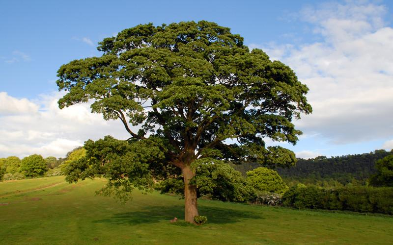
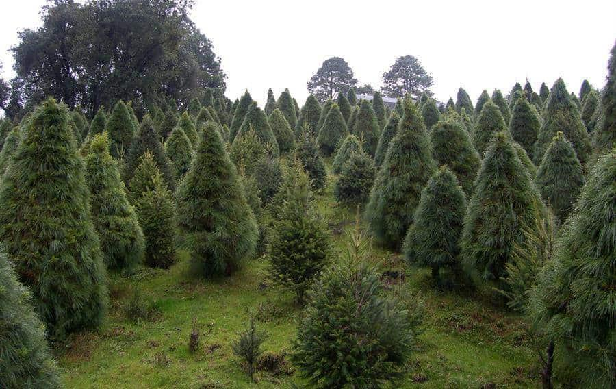

Explora nuestra flora
Conoce los árboles que embellecen nuestro campus y contribuyen al medio ambiente.

Árbol de mango
Mangifera indica
Produce frutos deliciosos y ricos en vitaminas A, C y antioxidantes.

Roble
Quercus spp
El roble ofrece una madera fuerte y duradera, usada en muebles, pisos y construcción.

Limón dulce
Citrus limetta
Su fruto es rico en vitamina C, fortaleciendo las defensas y mejorando la salud de lapiel.

Palmera
Arecaceae
Proporciona frutos como cocos y dátiles, ricos en nutrientes y aceites naturales.

Guayaba
Psidium guajava
Produce frutas ricas en vitaminas C, A y fibra. Fortalece el sistema inmunológico y mejora la digestión.

Pino
Pinus spp
El pino purifica el aire, su madera se usa en construcción y muebles, y su resina sirve para elaborar productos medicinales y aromáticos.

Madroño
Arbutus unedo
El madroño produce frutos ricos en vitamina C, ayuda a la digestión y se usa en infusiones que benefician el sistema urinario.

Malinche
Delonix regia
El malinche es un árbol ornamental muy bonito que da sombra, mejora el paisaje urbano y contribuye a reducir el calor en el ambiente

Guanábana
Annona muricata
La guanábana contiene antioxidantes, fortalece el sistema inmunológico, mejora la digestión y ayuda a combatir el estrés.

Bambú
Bambusa vulgaris
El bambú crece rápido, ayuda a conservar el suelo, reduce el CO₂ del aire y se usa en construcción, muebles y artesanías sostenibles.